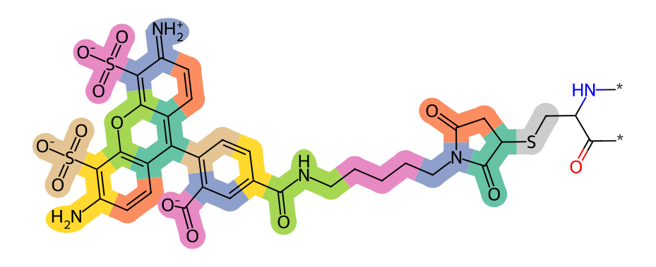

Models / HyRes/iCon
smFRET dyes
Single-molecule FRET reports distances and dynamics through dyes attached to the molecule of interest, and the dyes themselves can interact with proteins and nucleic acids. To simulate labeled molecules directly, we built intermediate-resolution models of four common smFRET dyes that run with HyRes and iCon in HyresBuilder.
Attached through their linkers
Alexa Fluor 488, Alexa Fluor 594, Cy3B and CF660R are each modeled with their maleimide linker and attach to the side-chain CB bead of a cysteine, which keeps its standard HyRes parameters. Alexa Fluor 488 and 594 also come in nucleic-acid versions, linked at the 3′ oxygen and the 5′ phosphate, so dye-labeled proteins and RNA/DNA can be simulated alongside smFRET experiments.
Select a dye below to see its bead mapping, drawn in the same style as the iCon small molecules so that each colored region is one bead.
